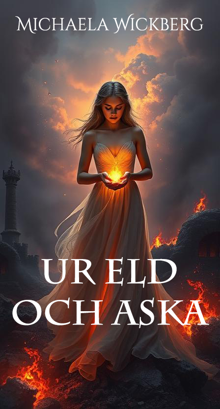

Ur eld och aska
Hon svor att hata honom. Han höll hennes hjärta i sina händer. Ett rike i skymning kräver ett omöjligt val.
IntresseanmälanFantasy romance som rör sig mellan natt och gryning – där fiender blir älskare och ljuset bryter igenom mörkret.
Jag skriver om kärlek som vågar möta mörkret. Mina berättelser växer fram ur frågor om skuld, försoning och hopp – och viskningar från världar bortom vår.
Teman: enemies to lovers, ljus mot mörker, helande och tillhörighet.
Boka författarsamtal →Ett urval av pågående och kommande titlar.
Hon svor att hata honom. Han höll hennes hjärta i sina händer. Ett rike i skymning kräver ett omöjligt val.
IntresseanmälanNär nattens prins kräver en brud, tänds ett ljus som vägrar dö – och väcker en uråldrig kraft.
IntresseanmälanEtt fallande stjärnregn, en brusten ed och två öden sammanflätas under den längsta natten.
IntresseanmälanDimhöljda skogar, runristade portar och städer byggda på urgamla löften. Magi kräver ett pris – och någon måste våga betala det.
En ljusbärare som lär sig att hennes sår bär hemliga dörrar.
Skuggfursten som väljer kärlekens sanning framför maktens lögn.
För samarbeten, event och förfrågningar: